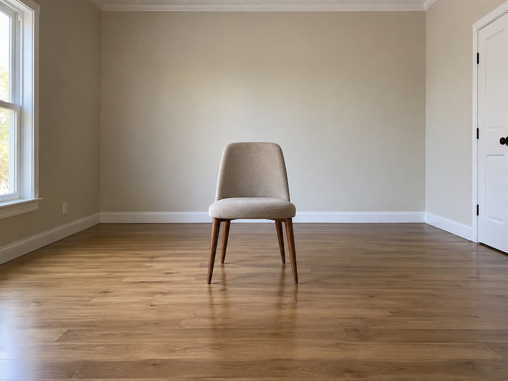
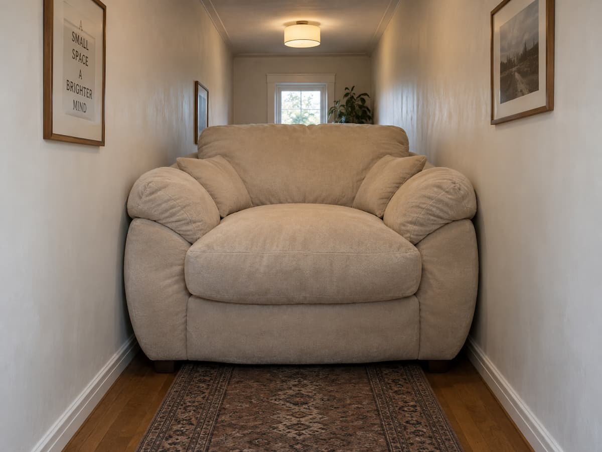
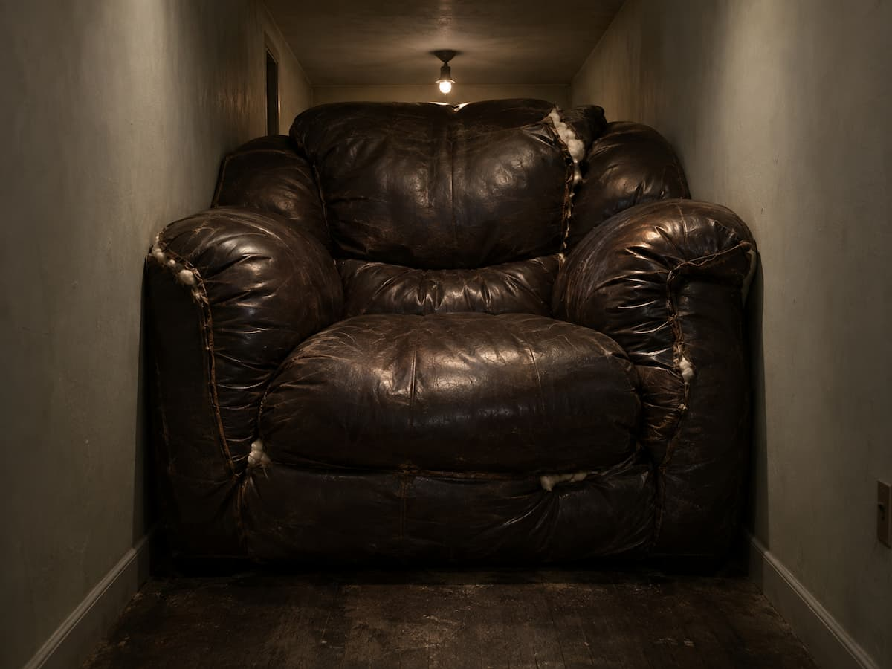
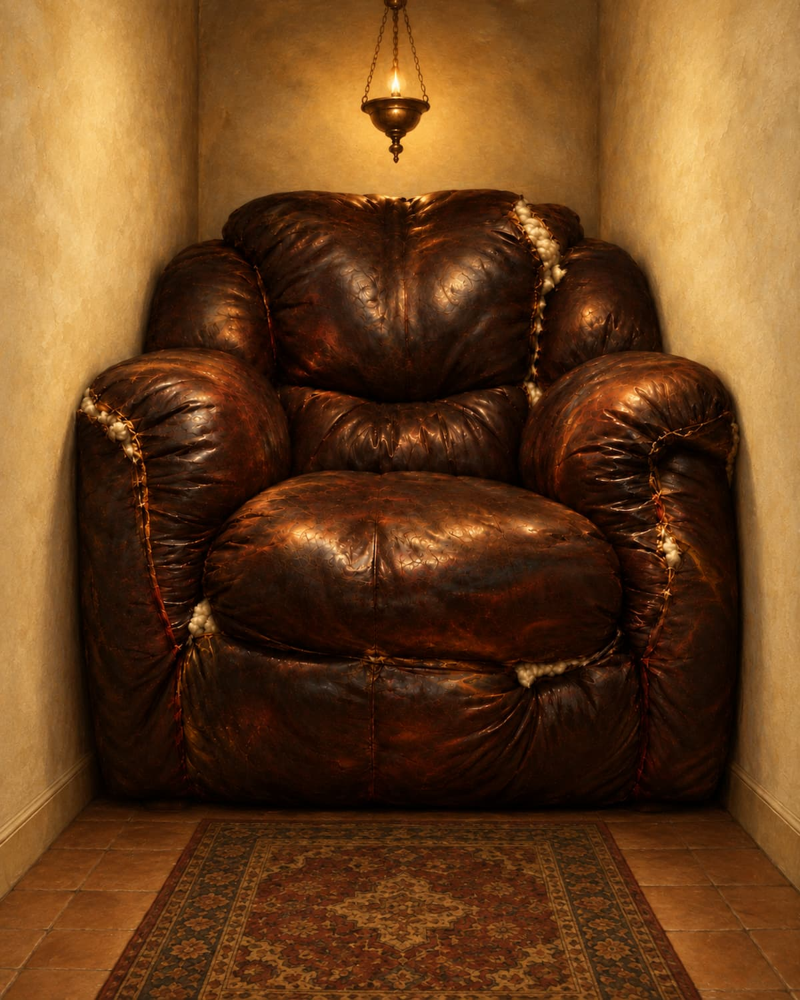
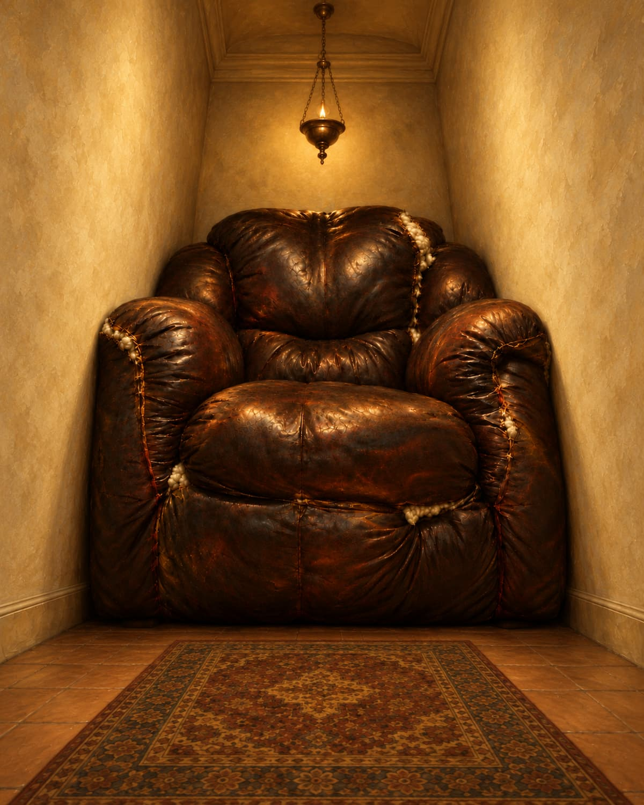
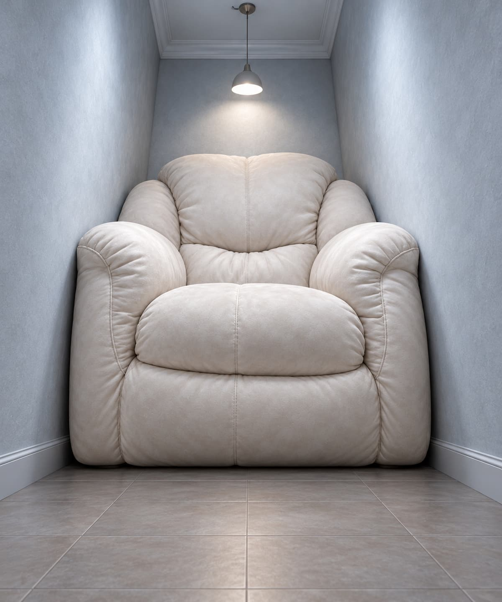
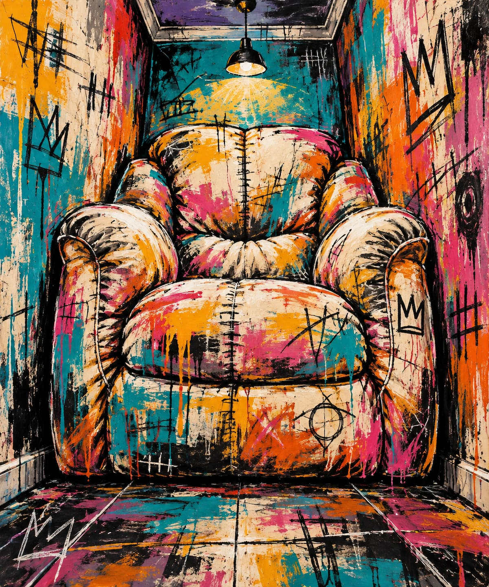
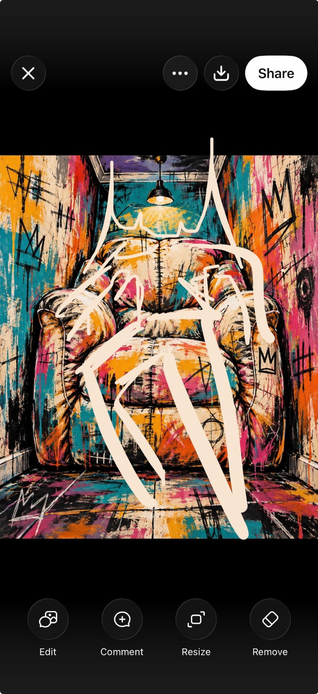
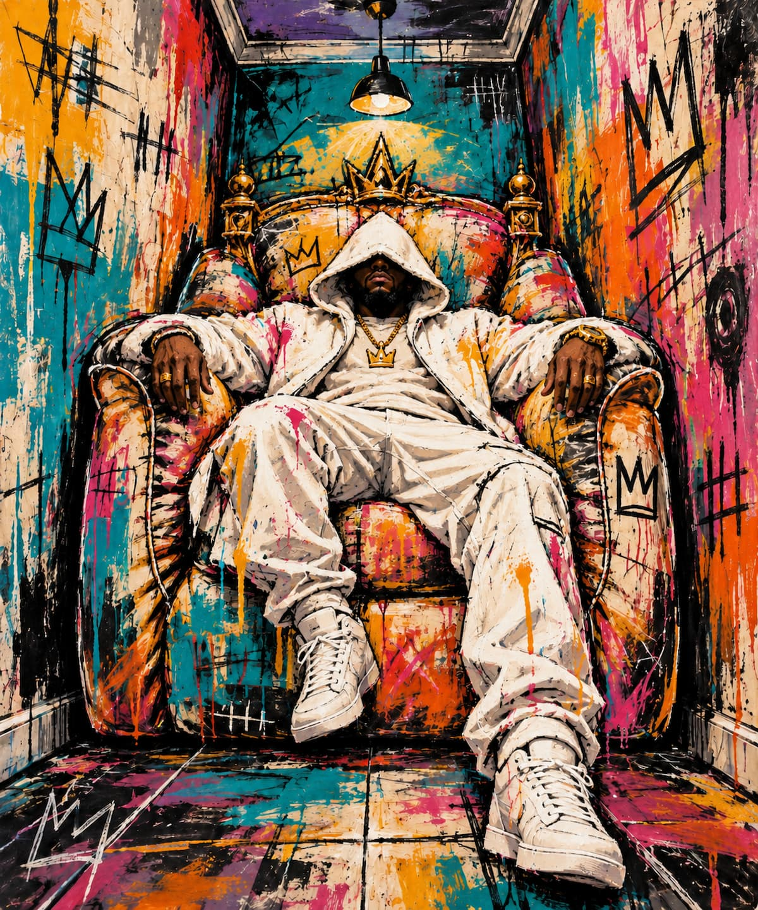
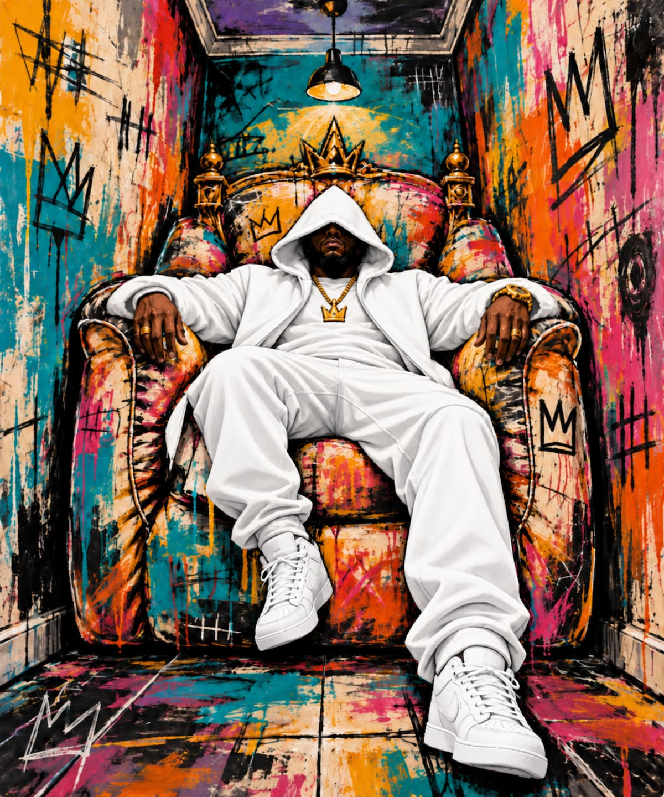

Chair Image Sequence
Leanna Urena · A.I. for Designers

Generation 01
Make an image of a chair in the middle of a room.

Generation 02
A fat chair in the middle of a skinny room.

Generation 03
A fat dark leather chair in the middle of a skinny room. It is bursting from the seams the walls can hardly contain it. There is a sense of suffocation. No windows, thin walls.

Generation 04
It is in the style of the old painting of Jesus. Like those old catholic renaissance painters. It’s an ominous inclusion in an otherwise pleasant scene.

Generation 05
Shot from a lower angle above to make the chair seem towering and imposing. Zoom out but change focal length to make chair seem bigger.

Generation 06
Remove this from the image. Make the sofa cleaner. White suede. Change nipple light and lighting of the scene to more cool tone.

Generation 07
Make it the chair image into style of basquiat with new colors

Generation 08
I added some details I want in white. Make this chair sofa a dope throne with a dude laid up in Splendor. White clothing white hood covering most of his face.

Generation 09
Make him clean white. Not a speck of paint on him. Everything else remains same.
